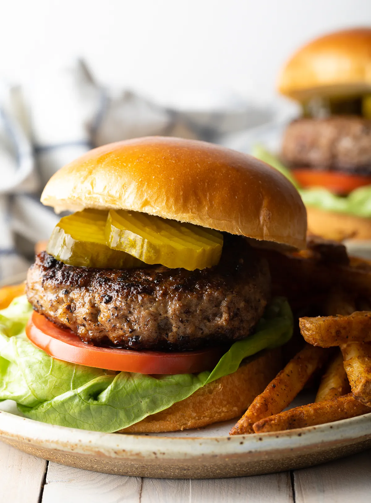

Hamburger

Description
Big juicy hamburger patties don’t need a lot of ingredients or extras. With just a few great tips, these patties are perfect for cookouts all year ’round!
Ingredients
- 1 Bun
- 1 Hamburger Patty
- 1 Slice of Tomato
- 2 Pickles
- 1 Piece of Lettuce
- Ketchup
- Mustard
- Mayonnaise
Steps
- Preheat skillet to medium heat
- Cook burger in skillet for approximately 6 minutes per side, depending on thickness of patty
- While burger is cooking, slice tomato and pickles
- Spread mayonnaise on bottom bun
- Once burger is cooked, place patty on bottom bun and add pickles, ketchup, mustard, tomato, and lettuce